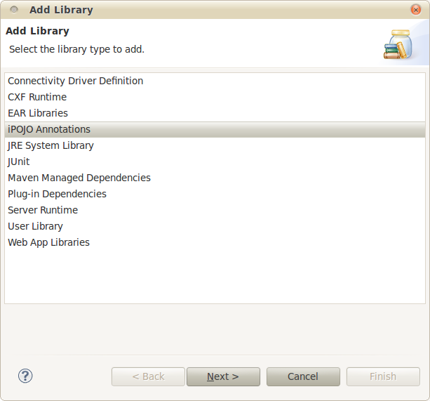
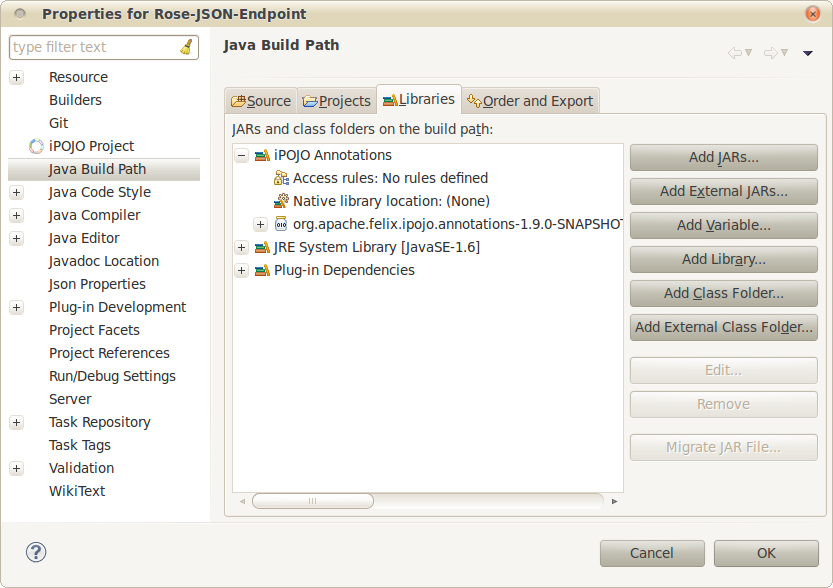
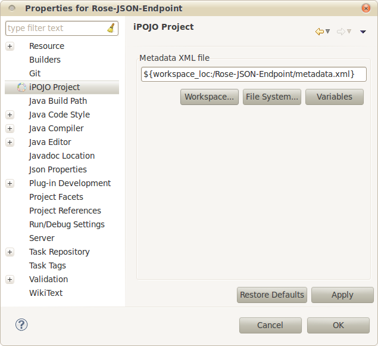
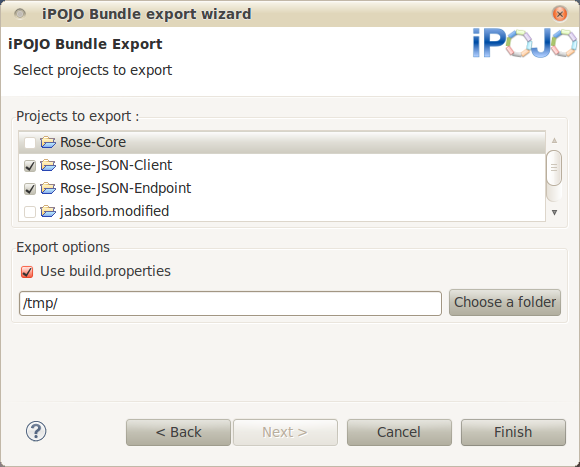

iPOJO Nature plug-in usage
Table of Contents
Add the annotations library
This plug-in embeds a version of iPOJO annotations library,
which can be added to a project build path. The project will reference
a plug-in library that does not depend on the Eclipse installation
location nor the workspace location.
- Right-click a Java or PDE project and select Build
Path > Add library
- Select iPOJO Annotations, then click Next

- A page shows the location of the JAR file that will be used,
click Finish
- The build path of the project now contains the annotations
library :

This method also works on project without the iPOJO nature.
By default, the plug-in will use the first metadata.xml file
found to prepare the manipulation. Also, it is able to use a specified
meta data file.
- Right-click on a Java/PDE project that has the iPOJO
nature and select Properties
- Select iPOJO Project

- On the page select the file to use as iPOJO meta data. The
path can contain Eclipse variables.
- You can use Restore defaults to return to the
standard behavior of the plug-in.
Export manipulated bundles
iPOJO Nature plug-in also provides a bundle Exporter, which
allows to create bundles from iPOJO and pure-Java projects.
- Open the Export wizard File > Export
- Select iPOJO Bundles > iPOJO Bundle
- Select the export options :

- Check the projects to export. They will be (re-)built if
necessary
- Check Use build.properties if you're
willing to embed files in the output JAR using the build.properties
file
- Select an output folder
- Click Finish
The exported bundles files names will be their symbolic name : the
version does not appear in the files names.
Existing bundles with the same files names are overwritten without
confirmation.